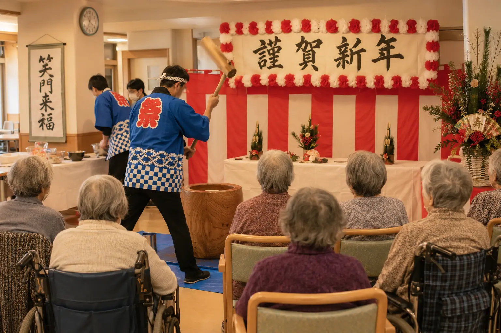

Monthly Care Report
2026年1月 (January 2026)
新年の祝い、そして餅つき — イベント予算を5倍に拡充
新年を迎えた1月は、おせち料理・書き初め・餅つきと、日本の伝統文化が凝縮された月でした。誤嚥対策と楽しさの両立を細やかに工夫しています。Care Support Pass のご支援を原資に、月次イベント予算を 月¥30,000 → 月¥150,000 へと 5倍に拡充。本格的な餅つき道具のレンタル・地域演者のお招きなどが可能になりました。
Numbers
数字で見る今月
現入居者数
17名
新規ご入居
1名
活動イベント
6回
外部訪問者
26名
In Focus
今月の主な瞬間

Album
今月のひとこま


Story
今月の活動
お正月のしつらえ
元旦には、栄養士監修の特別おせちをお出ししました。嚥下機能に合わせた個別調整版も同時にご用意し、見た目はおせち、安全性は嚥下調整食という工夫を施しました。お雑煮も、お餅の代わりに白玉やお豆腐で代用するなど、入居者お一人お一人の状態に合わせた提供を心がけました。
餅つきと書き初め
1月15日の餅つきは、伝統の杵と臼で。実際に召し上がっていただくお餅は「やわらか餅」(片栗粉とお湯で調整した、嚥下しやすい食感) を別途用意。「これなら安心して食べられる」と、入居者の方々もご家族も、笑顔で召し上がっていただけました。今年は本格的な杵と臼を専門業者からレンタルし、より臨場感のある餅つきとなりました。
イベント予算 5倍に拡充
Care Support Pass のご支援を原資に、月次イベント予算を 月¥30,000 → 月¥150,000 へと拡充しました(5倍)。これにより、(1) 本格的な行事道具のレンタル、(2) 地域演者・講師のお招き、(3) 食材のグレードアップ ── がすべて施設負担で実施可能となりました。「老人ホームのイベント」の概念を超えた、本物の文化体験をお届けします。
来月の予定
- 2月3日: 節分・豆まき (誤嚥対策版)
- 2月14日: 手作りバレンタイン
- 2月下旬: ひな祭り準備 (ひな人形飾り付け)
Care Support Pass · Finance
支援者数 と 収支報告
支援者数 / 目標 25万人
110.0%
0
目標 250,000名 / 月¥25,000,000
110.0%
当月 支援者数
275,000名
当月 支援額
¥27,500,000
累計 支援額
¥128,900,000
支援金の使い道 — 2026年1月
月次イベント予算を月¥30,000 → 月¥150,000 へ5倍化、全既存施策の継続(看護師4名・理学療法士常駐・月額負担¥140,000・年末年始医療無料・冷暖房自己負担化)。
From the Director